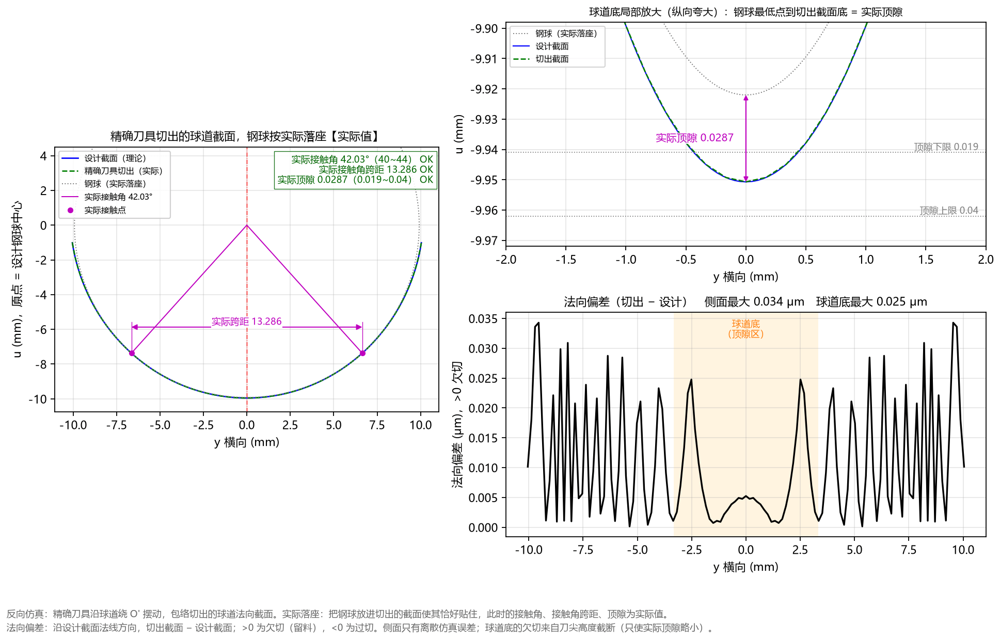

5.5 Tab 5：精确刀具反向仿真 (Ctrl+5)
精确刀具反向仿真 标签页是验证精确成型刀具设计正确性的核心检验工具。
软件在计算出精确刀具廓形后，会在后台驱动该刀具沿着圆弧轨迹 摆动走刀，求出刀具包络扫掠切出的实际球道法向截面，并把钢球实际放进切出的球道中（实际落座），通过左一、右二共 3 个独立子图进行全方位对比校核。

一、三子图布局详解（左一 + 右二）
1. 左图：精确刀具切出的球道截面，钢球按实际落座【实际值】
- 蓝色实线（
设计截面（理论）） vs 绿色虚线（精确刀具切出（实际））：正常状态下，绿色虚线与蓝色实线在整个球道工作面上完全重合； - 灰色点线圆（
钢球（实际落座））与洋红色标注：把直径为 的钢球实际放入绿色切出截面后，标出落座后的实际接触角、实际接触点与实际跨距； - 右上角审核结论框：集中显示
实际接触角、实际接触角跨距、实际顶隙、实际PCD四项实测值（及钢球中心移动）与图纸公差范围核对结果（全部合格时为绿框绿字OK，任一项超限时变为红框红字超出!）。
2. 右上图：球道底局部放大（纵向夸大）：钢球最低点到切出截面底 = 实际顶隙（独立放大子图！）
- 专门用一个独立的大尺寸子图，将球道底部
y = -2.0 ~ +2.0 mm区域在纵向上大幅放大； - 直观展示灰色点线（
钢球（实际落座））最低点与绿色虚线（切出截面）底部之间的实际顶隙（洋红色双向箭头），并同时画出蓝色实线（设计截面）以及两条灰色水平点线顶隙下限与顶隙上限； - 当刀尖高度截去了一小段尖底刃口（如双圆弧球道）时，您可以在此图中极其清晰地看到绿色切出截面底从蓝色尖底变成了平缓底，且实际顶隙箭头依然稳稳位于
顶隙下限线之上！
3. 右下图：法向偏差（切出 − 设计） 侧面最大 ... μm 球道底最大 ... μm
右下子图将实际切出截面与设计截面之间的法向偏差放大了数万倍，以微米（μm，）为单位显示：
- 中央浅橙色阴影区
球道底（顶隙区）：直观区分中央非接触顶隙区与两侧钢球工作接触区； - 顶部标题分项读数：分别列出
侧面最大 ... μm（钢球工作区）与球道底最大 ... μm（顶隙区）； - 纵轴
法向偏差 (μm)，>0 欠切符号定义：> 0（正值 = 欠切）：刀具切出的截面位于设计截面内侧（多留了材料）；< 0（负值 = 过切）：刀具切出的截面侵入了设计截面外侧（多切了材料）。
二、如何判断精确刀具反向仿真图是否合格？
- 标准完全切出状态（如上图
AC3300-G）：- 左图右上角核对框三项全部为绿色
OK；右上放大图中绿色切出截面与蓝色设计截面完全重合；右下偏差图侧面与球道底最大偏差仅约0.034 μm（离散仿真的数值精度极限，物理上等同于零误差）。
- 左图右上角核对框三项全部为绿色
- 刀尖适度截断但实际顶隙合格状态（如案例三
AC10000双圆弧）：- 当双圆弧球道的
刀尖高度设为钢球半径9.875 mm（低于尖底接触段最高点10.2269 mm）时，侧面接触区最大偏差依然只有0.068 μm（零误差），右上放大图清晰显示底部尖点被平端截去留料48 μm，但实际顶隙 0.0384仍在顶隙下限 0.02之上（左图核对框全部绿色OK），刀具完全可用！
- 当双圆弧球道的
- 异常报警状态（过切或实际顶隙不足）：
- 若发生过切、侧面欠切超限或实际顶隙低于下限，右下曲线与核对框会变为醒目的红色警告，提醒您调整切入角或提高刀尖高度。